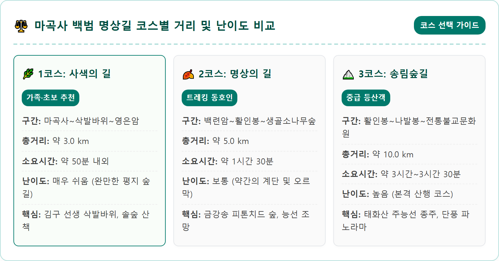
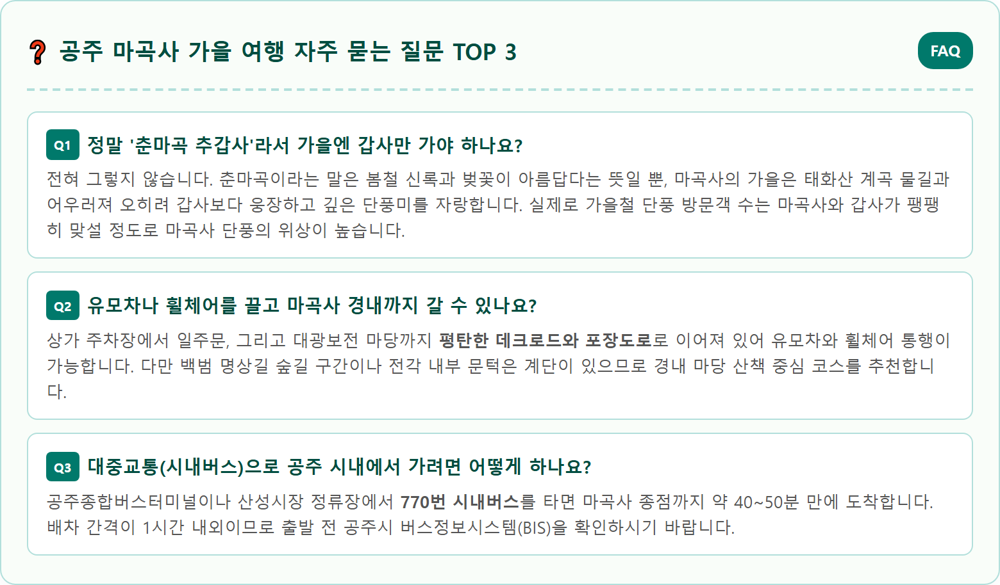

A picturesque, ultra-detailed wide landscape photography of Magoksa temple in Gongju during autumn peak foliage. The iconic Geungnakgyo stone-arch bridge crossing the crystal-clear Taehwa river, reflecting brilliant red maple trees, golden ginkgo, and orange zelkova leaves on the tranquil water surface. Traditional wooden Buddhist temple pavilions, Daegwangbojeon and Daeungbojeon, surrounded by the steep, colorful autumn forested slopes of Taehwasan mountain. Gentle morning mist rising from the stream, warm sunlight piercing through the vibrant leaves, tranquil autumn atmosphere, 8k resolution, photorealistic masterpiece, 1:1 aspect ratio.


| 구분 | 세부 정보 |
|---|---|
| 명칭 및 주소 | 마곡사 (충청남도 공주시 사곡면 마곡사로 966) |
| 세계유산 지정 | 유네스코 세계유산 '산사, 한국의 산지승원' (2018년 등재) |
| 단풍 절정기 | 10월 28일경 ~ 11월 9일경 |
| 입장료 | 전액 무료 (문화재 관람료 폐지) |
| 개방 시간 | 하절기 06:00~18:30 / 동절기(11~2월) 06:30~17:30 (연중무휴) |
| 주차 요금 | 마곡사 관광단지 상가 공영주차장 전액 무료 |
| 추천 트레킹 코스 | 백범 명상길 1코스 (마곡사~삭발바위~영은암, 3km, 약 50분 소요) |
| 대중교통 | 공주종합버스터미널에서 770번 시내버스 탑승 (약 45분 소요) |